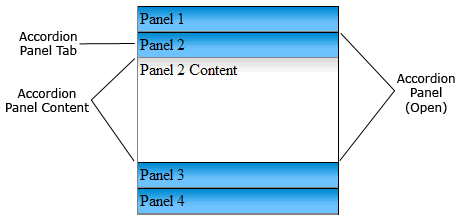

A Spry widget is a page element that combines HTML, CSS and JavaScript data to enable user interaction. The Spry framework for Ajax supports a set of reusable widgets written in standard HTML, CSS, and JavaScript code. A version of this file is available on Adobe LiveDocs. Please check it for comments and updates.
A Spry widget is a page element that combines HTML, CSS and JavaScript code to enable user interaction. A Spry widget is made up of the following parts:
The Spry framework supports a set of reusable widgets written in standard HTML, CSS, and JavaScript code. You can easily insert these widgets—the code is HTML and CSS at its simplest—and then style the widget. The behaviors in the framework include functionality that lets users show or hide content on the page, change the appearance (such as color) of the page, interact with menu items, and much more.
Each widget in the Spry framework is associated with unique CSS and JavaScript files, available on Adobe Labs. The CSS file contains everything necessary for styling the widget, and the JavaScript file gives the widget its functionality. The CSS and JavaScript files associated with a given widget are named after the widget, so it’s easy for you to know which files correspond to which widgets. (For example, the files associated with the Accordion widget are called SpryAccordion.css and SpryAccordion.js).
It is critical to the usability of the widget that it be accessible when following established web navigation conventions. You can’t assume that the user is using a mouse, and therefore Adobe has taken steps to ensure that all aspects of the currently available widgets are accessible through the keyboard. In the Accordion widget, for example, you can use up and down arrow keys to open content panels. Adobe encourages all widget developers to build in this kind of functionality.
It’s also impossible to control the end user’s environment. Adobe develops widgets to ensure that when JavaScript is turned off, all the content of the widget is still available on the screen. While this will most likely affect the page layout, it is more important that the content of the widget still be available, especially when working with disclosure widgets. Adobe ensures that default CSS states do not set visibility to hidden, and that HTML code is not positioned off screen.
Before you add Spry widgets to your web pages, download and link the appropriate files.
An Accordion widget is a set of collapsible panels that can store a large amount of content in a compact space. Site visitors hide or reveal the content stored in the accordion by clicking the tab of the panel. The panels of the accordion expand or contract accordingly as the visitor clicks different tabs. In an accordion, only one content panel is open and visible at a given time. The following example shows an Accordion widget, with the second panel expanded:
The default HTML code for the Accordion widget comprises an outer div tag that contains all of the panels, a div tag for each panel, and a header div and content div within the tag for each panel. An Accordion widget can contain any number of individual panels. The HTML code for the Accordion widget also includes script tags in the head of the document and after the accordion’s HTML code.
The script tag in the head of the document defines all of the JavaScript functions related to the Accordion widget. The script tag after the Accordion widget code creates a JavaScript object that makes the accordion interactive. Following is the HTML code for an Accordion widget:
<head>
...
<!--Link the CSS style sheet that styles the accordion-->
<link href="SpryAssets/SpryAccordion.css" rel="stylesheet" type="text/css" />
<!--Link the Spry Accordion JavaScript library-->
<script src="SpryAssets/SpryAccordion.js" type="text/javascript"></script>
</head>
<body>
<!--Create the Accordion widget and assign classes to each element-->
<div id="Accordion1" class="Accordion">
<div class="AccordionPanel">
<div class="AccordionPanelTab">Panel 1</div>
<div class="AccordionPanelContent">
Panel 1 Content<br/>
Panel 1 Content<br/>
Panel 1 Content<br/>
</div>
</div>
<div class="AccordionPanel">
<div class="AccordionPanelTab">Panel 2</div>
<div class="AccordionPanelContent">
Panel 2 Content<br/>
Panel 2 Content<br/>
Panel 2 Content<br/>
</div>
</div>
<div class="AccordionPanel">
<div class="AccordionPanelTab">Panel 3</div>
<div class="AccordionPanelContent">
Panel 3 Content<br/>
Panel 3 Content<br/>
Panel 3 Content<br/>
</div>
</div>
<div class="AccordionPanel">
<div class="AccordionPanelTab">Panel 4</div>
<div class="AccordionPanelContent">
Panel 4 Content<br/>
Panel 4 Content<br/>
Panel 4 Content<br/>
</div>
</div>
</div>
<script type="text/javascript">
var Accordion1 = new Spry.Widget.Accordion("Accordion1");
</script>
</body>
In the code, the new JavaScript operator initializes the Accordion widget object, and transforms the div content with the ID of Accordion1 from static HTML code into an interactive page element. The Spry.Widget.Accordion method is a constructor in the Spry framework that creates accordion objects, and the information necessary to initialize the object is contained in the SpryAccordion.js JavaScript library that you linked to in the head of the document.
Each of the div tags in the Accordion widget contains a CSS class. These classes control the style of the Accordion widget, and exist in the accompanying SpryAccordion.css file.
You can change the appearance of any given part of the Accordion widget by editing the CSS code that corresponds to the class names assigned to it in the HTML code. For example, to change the background color of the accordion’s tabs, edit the AccordionPanelTab rule in the SpryAccordion.css file. Keep in mind that changing the CSS code in the SpryAccordion.css file will affect all accordions that are linked to that file.
In addition to the classes shown in the HTML code, the Accordion widget includes certain default behaviors that are attached to the widget. These behaviors are a built‑in part of the Spry framework, and are in the SpryAccordion.js JavaScript library file. The Accordion library includes behaviors related to hovering, tab clicking (to open panels), panel focus, and keyboard navigation.
You can change the look of the accordion as it relates to these behaviors by editing the appropriate classes in the SpryAccordion.css file. If for some reason you want to remove a given behavior, you can delete the CSS rules that correspond to that behavior.
Note: While you can change the look of the accordion as it relates to a certain behavior, you cannot alter the built‑in behaviors themselves. For example, Spry still places an AccordionFocused class on an accordion in focus, even if no properties are set for the AccordionFocused class in the SpryAccordion.css file.In the preceding example, div tags create a nested tag structure for the widget:
Container div Panel div Tab div Content div
This 3-level, 4-container structure is essential for the Accordion widget to work properly; the structure, however, is more important than the actual tags you decide to use. Spry reads the structure (not div tags necessarily) and builds the widget accordingly. As long as the 3-level, 4-container structure is in place, you can use any block-level element to create the widget:
Container div Panel div H3 tag P tag
The div tags in the example are flexible and can contain other block-level elements. A p tag (or any other inline tag), however, cannot contain other block-level elements, so you cannot use it as a container or panel tag for the accordion.
The SpryAccordion.css file contains the rules that style the Accordion widget. You can edit these rules to style the accordion’s look and feel. The names of the rules in the CSS file correspond directly to the names of the classes specified in the Accordion widget’s HTML code.
Note: You can replace style-related class names in the SpryAccordion.css file and HTML code with class names of your own. Doing so does not affect the functionality of the widget, as CSS code is not required for widget functionality.The default functionality for the behaviors classes at the end of the style sheet are defined in the JavaScript library file SpryAccordion.js. You can change the default functionality by adding properties and values to the behavior rules in the style sheet.
The following is the CSS code for the SpryAccordion.css file:
/*Accordion styling classes*/
.Accordion {
border-left: solid 1px gray;
border-right: solid 1px black;
border-bottom: solid 1px gray;
overflow: hidden;
}
.AccordionPanel {
margin: 0px;
padding: 0px;
}
.AccordionPanelTab {
background-color: #CCCCCC;
border-top: solid 1px black;
border-bottom: solid 1px gray;
margin: 0px;
padding: 2px;
cursor: pointer;
}
.AccordionPanelContent {
overflow: auto;
margin: 0px;
padding: 0px;
height: 200px;
}
.AccordionPanelOpen .AccordionPanelTab {
background-color: #EEEEEE;
}
.AccordionPanelClosed .AccordionPanelTab {
}
/*Accordion behaviors classes*/
.AccordionPanelTabHover {
color: #555555;
}
.AccordionPanelOpen .AccordionPanelTabHover {
color: #555555;
}
.AccordionFocused .AccordionPanelTab {
background-color: #3399FF;
}
.AccordionFocused .AccordionPanelOpen .AccordionPanelTab {
background-color: #33CCFF;
}
The SpryAccordion.css file contains extensive comments, explaining the code and the purpose for certain rules. For further information, see the comments in the file.
For example, create a folder called SpryAssets in the root folder of your web site, and move the SpryAccordion.js file to it. The SpryAccordion.js file contains all of the information necessary for making the Accordion widget interactive.
<script src="SpryAssets/SpryAccordion.js" type="text/javascript"></script>
Make sure that the file path to the SpryAccordion.js file is correct. This path varies depending on where you’ve placed the file in your web site.
<link href="SpryAssets/SpryAccordion.css" rel="stylesheet" type="text/css" />
Make sure that the file path to the SpryAccordion.css file is correct. This path varies depending on where you’ve placed the file in your web site.
<div id="Accordion1" class="Accordion"> </div>
<div id="Accordion1" class="Accordion"> <div class="AccordionPanel"> </div> <div class="AccordionPanel"> </div> </div>
The preceding code adds two panels to the accordion. You can add unlimited panels.
<div class="AccordionPanel"> <div class="AccordionPanelTab">Panel 1 Title</div> </div>
<div class="AccordionPanel"> <div class="AccordionPanelTab">Panel 1 Title</div> <div class="AccordionPanelContent">Panel 1 Content</div> </div>
Insert the content between the opening and closing AccordionPanelContent tags. For example, Panel 1 Content, as in the preceding example. The content can be any valid HTML code, including HTML form elements.
<div id="Accordion1" class="Accordion">
. . .
</div>
<script type="text/javascript">
var Accordion1 = new Spry.Widget.Accordion("Accordion1");
</script>
The new JavaScript operator initializes the Accordion widget object, and transforms the div content with the ID of Accordion1 from static HTML code into an interactive accordion object. The Spry.Widget.Accordion method is a constructor in the Spry framework that creates accordion objects. The information necessary to initialize the object is contained in the SpryAccordion.js JavaScript library that you linked to at the beginning of this procedure.
Make sure that the ID of the accordion’s div tag matches the ID parameter you specified in the Spry.Widgets.Accordion method. Make sure that the JavaScript call comes after the HTML code for the widget.
The complete code looks as follows:
<head>
...
<link href="SpryAssets/SpryAccordion.css" rel="stylesheet" type="text/css" />
<script src="SpryAssets/SpryAccordion.js" type="text/javascript"></script>
</head>
<body>
<div id="Accordion1" class="Accordion">
<div class="AccordionPanel">
<div class="AccordionPanelTab">Panel 1</div>
<div class="AccordionPanelContent">
Panel 1 Content<br/>
Panel 1 Content<br/>
Panel 1 Content<br/>
</div>
</div>
<div class="AccordionPanel">
<div class="AccordionPanelTab">Panel 2</div>
<div class="AccordionPanelContent">
Panel 2 Content<br/>
Panel 2 Content<br/>
Panel 2 Content<br/>
</div>
</div>
<div class="AccordionPanel">
<div class="AccordionPanelTab">Panel 3</div>
<div class="AccordionPanelContent">
Panel 3 Content<br/>
Panel 3 Content<br/>
Panel 3 Content<br/>
</div>
</div>
<div class="AccordionPanel">
<div class="AccordionPanelTab">Panel 4</div>
<div class="AccordionPanelContent">
Panel 4 Content<br/>
Panel 4 Content<br/>
Panel 4 Content<br/>
</div>
</div>
</div>
<script type="text/javascript">
var Accordion1 = new Spry.Widget.Accordion("Accordion1");
</script>
</body>
<div id="Accordion1" class="Accordion"> <div class="AccordionPanel"> <div class="AccordionPanelTab"></div> <div class="AccordionPanelContent"></div> </div> </div>
The preceding code adds a panel to the Accordion widget. You can add unlimited panels.
Making widgets accessible for keyboard navigation is an important part of every widget. Keyboard navigation lets the user control the widget with arrow keys and custom keys.
The foundation of keyboard navigation is the tabIndex attribute. This attribute tells the browser how to navigate through the document.
To enable keyboard navigation on the accordion, add a TabIndex value to the accordion container tag, as follows:<div id="Acc1" class="Accordion" tabIndex="0">
If the tabIndex attribute has a value of zero (0), the browser determines the order. If the tabIndex attribute has a positive integer value, that order value is used.
Note: Using tabIndex on a div tag is not XHTML 1.0 compliant.You can also set custom keys for keyboard navigation. Custom keys are set as arguments of the accordion constructor script:
<script type="text/javascript">
var acc3= new Spry.Widget.Accordion("Acc3", { nextPanelKeyCode: 78 /* n key */, previousPanelKeyCode: 80 /* p key */ });
</script>
You can set a certain panel to be open when the page containing the Accordion widgets loads in a browser.
Set the defaultPanel option in the constructor as follows:<script type="text/javascript">
var acc8 = new Spry.Widget.Accordion("Accordion1", { defaultPanel: 2 });
</script>
Note: The accordion panels use a
zero-based counting system, so setting the value to 2 opens the third
panel.
You can programatically open different panels by using JavaScript functions. For example, you might have a button on your page that opens a particular accordion panel when the user clicks the button.
Use the following JavaScript functions to open accordion panels:<input type="button" onclick="acc10.openFirstPanel()" >open first panel</input>
<input type="button" onclick="acc10.openNextPanel()" >open next panel</input>
<input type="button" onclick="acc10.openPreviousPanel()" >open previous panel</input>
<input type="button" onclick="acc10.openLastPanel()" >open last panel</input>
<script type="text/javascript">
var acc10 = new Spry.Widget.Accordion("Accordion1");
</script>
The SpryAccordion.css file provides the default styling for the Accordion widget. You can, however, easily customize the widget by changing the appropriate CSS. The CSS rules in the SpryAccordion.css file use the same class names as the related elements in the accordion’s HTML code, so it’s easy for you to know which CSS rules correspond to the different sections of the Accordion widget. Additionally, the SpryAccordion.css file contains class names for behaviors that are related to the widget (for example, hovering and clicking behaviors).
The SpryAccordion.css file should already be included in your website before you start customizing.
Note: Internet Explorer up to and including version 6 does not support sibling and child contextual selectors (for example, .AccordionPanel + .AccordionPanel or .Accordion > .AccordionPanel).Set properties for the entire Accordion widget container, or set properties for the components of the widget individually.
You can replace style-related class names in the SpryAccordion.css file and HTML code with class names of your own. Doing so does not affect the functionality of the widget.
The SpryAccordion.css file contains extensive comments, explaining the code and the purpose for certain rules. For further information, see the comments in the file.
Set properties for the entire Accordion widget container, or set properties for the components of the widget individually.
To change the text styling of an Accordion widget, use the following table to locate the appropriate CSS rule in the SpryAccordion.css file, and then add your own text styling properties and values.| Text to change |
Relevant CSS rule |
Example of properties and values to add |
|---|---|---|
Text in the entire accordion (includes both tab and content panel) |
.Accordion or .AccordionPanel |
font: Arial; font-size:medium; |
Text in accordion panel tabs only |
.AccordionPanelTab |
font: Arial; font-size:medium; |
Text in accordion content panels only |
.AccordionPanelContent |
font: Arial; font-size:medium; |
| Part of widget to change |
Relevant CSS rule |
Example of property and value to add or change |
|---|---|---|
Background color of accordion panel tabs |
.AccordionPanelTab |
background-color: #CCCCCC; (This is the default value.) |
Background color of accordion content panels |
.AccordionPanelContent |
background-color: #CCCCCC; |
Background color of the open accordion panel |
.AccordionPanelOpen .AccordionPanelTab |
background-color: #EEEEEE; (This is the default value.) |
Background color of panel tabs on hover |
.AccordionPanelTabHover |
color: #555555; (This is the default value.) |
Background color of open panel tab on hover |
.AccordionPanelOpen .AccordionPanelTabHover |
color: #555555; (This is the default value.) |
By default, the Accordion widget expands to fill available space. To constrain the width of an Accordion widget, set a width property for the accordion container.
By default, the height of Accordion widget panels is set to 200 pixels. To change the height of panels, change the height property in the .AccordionPanelContent rule.
The Accordion widget includes some predefined behaviors. These behaviors consist of changing CSS classes when a particular event occurs. For example, when a mouse pointer hovers over an accordion panel tab, Spry applies the AccordionPanelTabHover class to the widget. (This behavior is similar to a:hover for links.) The behaviors are blank by default; to change them, add properties and values to the rules.
| Behavior |
Description |
|---|---|
.AccordionPanelTabHover |
Activates when hovering over the panel tab |
.AccordionPanelOpen |
Activates on the tab of the open panel |
.AccordionPanelClosed |
Activates on the closed panels |
.AccordionFocused |
Activates when the entire accordion gets focus. |
For examples, see the Accordion sample file located in the samples directory of the Spry directory that you downloaded from Adobe Labs.
<script type="text/javascript">
var acc2 = new Spry.Widget.Accordion("Acc2", { hoverClass: "hover", openClass: "open", closedClass: "closed", focusedClass: "focused" });
</script>
By default, accordion panels use animation to smoothly open and close. You can turn this animation off, however, so that the panels instantly open and close.
To turn off animation, send an argument in the accordion constructor, as follows:<script type="text/javascript">
var acc5 = new Spry.Widget.Accordion("Acc5", { enableAnimation: false });
</script>
You can change the time it takes for a panel to open. Set the time in milliseconds (1000 = 1 second). By default, Spry uses 500 milliseconds.
Add the duration option to the constructor:<script type="text/javascript">
var acc9 = new Spry.Widget.Accordion("Acc9", { duration: 100 });
</script>
By default, when animation is enabled, Spry forces all accordion content panels to use the same height. Spry derives this height from the height of the default open panel of the accordion, which is determined by CSS or by the height of the content in the panel.
The accordion also supports variable height panels. To turn this support on, pass a useFixedPanelHeights: false option to the accordion's constructor.
Pass a useFixedPanelHeights:false option as follows:<script type="text/javascript">
var acc7 = new Spry.Widget.Accordion("Acc7", { useFixedPanelHeights: false });
</script>
For an example, see the Accordion sample file located in the samples directory of the Spry directory that you downloaded from Adobe Labs.
To have Spry set the panel height to a set value in JavaScript (rather than CSS code), pass the fixedPanelHeight option that programatically sets the content panel heights. Pixels are used for this option.
<script type="text/javascript">
var acc7 = new Spry.Widget.Accordion("Acc7", { fixedPanelHeight: "300px" });
</script>
Note: When using Variable Panel Heights, the cursor will turn to a hand for the open panel. This is expected because the panel can still close onclick. It can be overridden by editing the accordion class:
.AccordionPanelOpen {
cursor: auto;
}
Copyright © 2006. Adobe Systems Incorporated.
All rights reserved